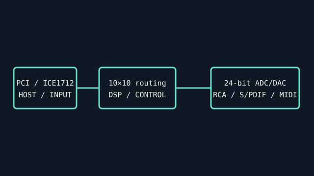

[ INDIVIDUAL COMPONENT // SOUND HARDWARE ]
M-Audio Delta 1010LT
A PCI multitrack audio interface using an ICE1712/Envy24 controller. The 1010LT provides most analog I/O on attached RCA leads rather than a large external rack unit.

IDENTIFICATION: Match the complete printed model, revision, bundled breakout, and accessory markings. Specs below describe this named model; family-level variants are not assumed interchangeable.
Specifications
| Catalog subcategory | PCI sound cards |
|---|---|
| Product ID | M-Audio Delta 1010LT PCI digital audio interface |
| Bus / host | 32-bit PCI expansion card; requires a conventional PCI host slot and the legacy Delta driver family. |
| Connectors and I/O | Eight unbalanced RCA analog inputs plus eight RCA analog outputs, two balanced XLR mic inputs, coaxial S/PDIF stereo input/output, MIDI DIN I/O, and word-clock connection as described in the model guide. |
| Chipset / conversion / protocol | ICE1712/Envy24 multichannel controller; 24-bit conversion up to 96 kHz. Total simultaneous streams and channel routing are managed in the Delta Control Panel/driver. |
| Drivers / operating systems | Official Delta drivers supported legacy Windows and Mac OS releases; package-specific WDM/MME/ASIO support varies. M-Audio lists it under legacy downloads; no current OS guarantee is made here. |
| Variant compatibility | Delta 1010LT is not the rack-based Delta 1010. Retain its captive analog/RCA and digital cable harnesses; verify that both XLR inputs and S/PDIF connectors are present on the actual card. |
Service & preservation
Protect the permanently attached leads from pulling and label each numbered RCA channel before disconnecting. Record PCI device ID, driver build, and control-panel routing; inspect the card’s analog cables and XLR connector solder joints.
Identification and compatibility checks
- Photograph the product/model label, board silkscreen/revision, connector faces, cable assemblies, and accessory part numbers before installation.
- Check electrical bus and host slot or USB/MIDI protocol support against the exact manual; connector shape alone does not establish compatibility.
- For analog I/O, confirm line/mic/instrument level, phantom-power behavior, channel map, and direction from the model-specific documentation before connecting equipment.
- When software or driver support is uncertain, preserve the last known-good installer and document tested host OS, driver version, and device identifier.
Primary manufacturer & standards sources
- M-Audio Delta 1010LT product archiveManufacturer product page for the exact LT model.
- M-Audio Delta 1010LT User Guide (archived scan)Archived copy of the model-specific manufacturer manual, including product features and routing.
- M-Audio legacy downloadsManufacturer portal for legacy driver and documentation packages.
Source selection is model-specific where an original manual or vendor product/support page exists. Archived scans preserve manufacturer documentation; operating-system claims are limited to what the cited product/manual materials identify.